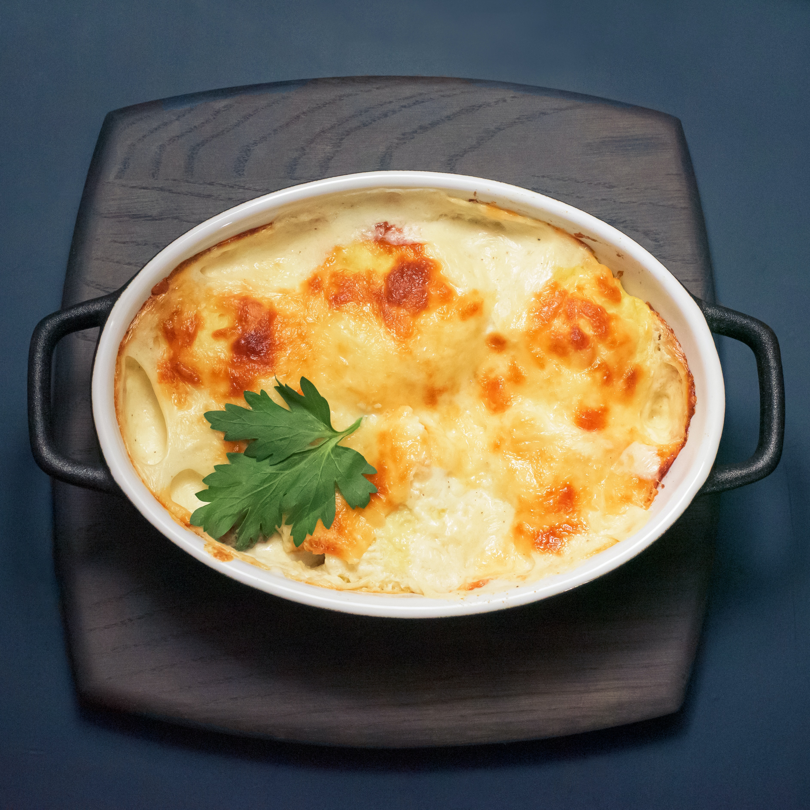

Potato Casserole (Escondidinho)

A tasteful Potato Casserole
Ingredients
- Meat
- Potatoes
- Tomato sauce
- Garlic
- Bell peppers
- Butter
- Cheeses
- Spices and seasonings
How to Make Potato Casserole Step-by-Step
While this could be to some people not a true Potato Casserole, it's the only name that would fit this very famous Brazilian dish, so that's what I'm calling it for English speakers (I put the real name right next to it)
- Peel the potatoes and cook them untill they are nice and soft
- Make your mashed potatoes with lots of milk and butter (You can sprinkle some rosemary in there if you're feeling naughty)
- Set your mashed potatoes aside and cook your meat with a little bit of salt, garlic and the bell peppers.
- Layer the Casserole as you would hide your meat, so mashed potatoes on the bottom, meat, mashed potatoes on top and then lay some of that cheese to finish it off
- Bake covered with foil for at least 10/15 min (It really depends on your oven)
- Take the foil off and put it back in the oven for more 5 min to finish it off
- Let it rest for a few minutes and then it's done